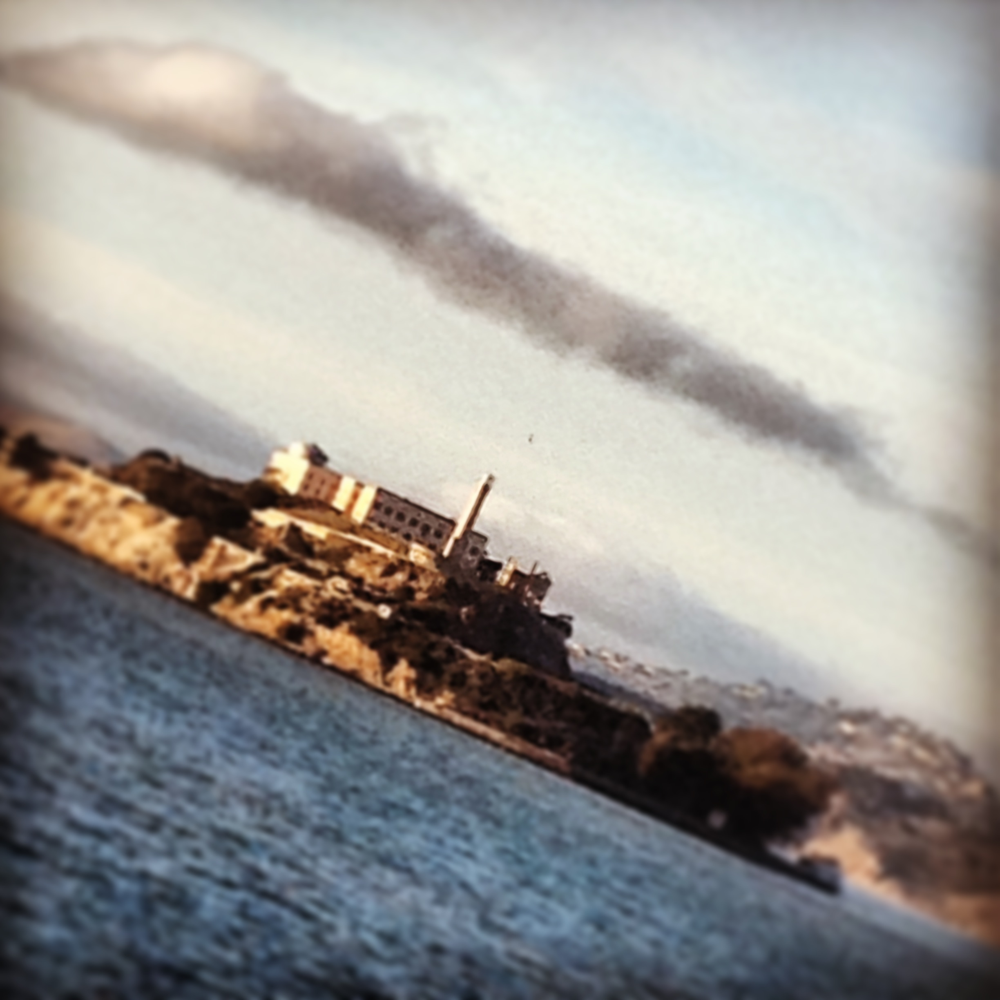

San Francisco


With these pictures I try to capture my association of San Francisco with water. The moniker of "city by the bay" has always appealed to me, and I have always loved living in coastal cities and towns. It is this relationship with water that makes San Francisco feel so free and beautiful